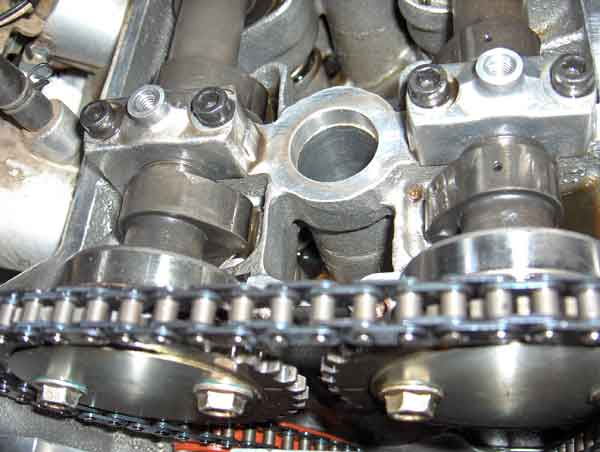
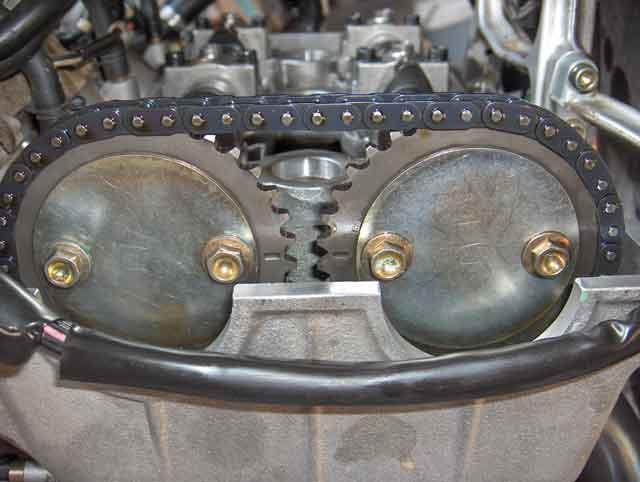
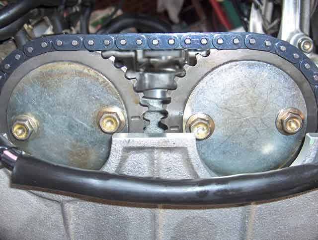
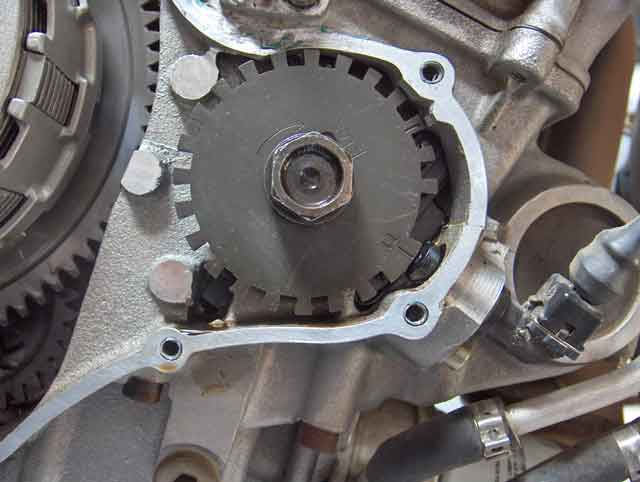

Tornado 903 Camchain Replacement Procedure
17 May 2015
Installation
(In the following, references are made to page & section numbers in the Workshop Manual.)
Method Two: skip to step 6 below
1. Remove the sprockets & locating pins from each camshaft
2. Set the crankshaft to TDC
3. Install the exhaust shaft with the #1 lobes facing the centre. Torque the caps to 10 Nm, NOT as per 5.1.5, pg. 125, which calls for 13 Nm,
which will eventually tear the threads out of the head. If you do that, it's best to helicoil and fit studs to the 12 cap holes.
4. Install inlet shaft with #1 lobes facing the centre - the #1 lobes of inlet & exhaust should face each
other as per Fig.1.

Fig.1: This picture was taken before the chain was removed, but it gives you the idea.
5. Torque the caps to 10 Nm, as per 3. above.
6. Fit the (rear) moving guide (orange piece in Fig.1)
7. Slip the new chain over the crankshaft sprocket and drape it over the camshaft flanges.
8. Fit the fixed (front) chain guide.
9. Fit the phonic wheel, (don't install the bolt) then check that the crankshaft is at top dead centre on cylinder 1, as per Figure 4.
10. Mount the exhaust sprocket (pin removed) on it's cam shoulder, with the alignment mark pointing left, and the drive side of the chain taut
11. Mount the inlet sprocket (pin removed) on it's cam shoulder, with the alignment mark pointing right, and the drive side of the chain taut
12. Both marks should be in alignment as per Fig 2 (but without the plates or bolts fitted)

Fig.2: Camshafts properly timed at Top Dead Centre
13. Take up the chain slack by pushing on the chain tensioner guide
14. Using the (24mm A/F) hex section on the inlet cam between cylinders 2 & 3, rotate the cam until the locating pin can be inserted and driven home.
15. Temporarily assemble the cover plate & M6 fixing screws
16. Using the (24mm A/F) hex section on the exhaust cam between cylinders 2 & 3, rotate the cam until the locating
pin can be inserted and driven home.
17. Temporarily assemble the cover plate & M6 fixing screws
18. Check that all 3 timing marks are in their TDC position.
19. Install the Camchain Tensioner with it's ratchet shaft retracted, and without
the tensioner spring.
20. Place the tensioner spring into postion, and compress it, noting the ratchet shaft moving and taking up chain slack.
21. Fit the tensioner spring retaining bolt.
22. Remove one sprocket fixing screw, clean it, apply Loctite 243 & tighten to 13 Nm.
23. Repeat, in turn, for the remaing 3 screws, rotating the sahfts as necessary to gain access to the bolt heads.
24. The alignment lines on the shaft sprockets will be as shown in Fig 3

Fig.3: Inlet & Exhaust Shafts are at rest.
25. Fix the Phonic Wheel with it's retaining bolt using Loctite 243 (not 648 as suggested in the manual on pg 149. You may never get it off again.) Torque to 26 Nm.
26. Turn the crankshaft clockwise to TDC, as in Fig 4.

Fig.4: Crankshaft is at Top Dead Centre.
27. The shafts' alignment marks should now be aligned as in Fig 5.

Fig.5: Inlet & Exhaust Shafts are at Top Dead Centre
28. Rotate the crankshaft, carefully, 2 full turns to check smooth running and allow the tensioner to adjust itself. Don't force it. If they are not aligned, the valves may hit the pistons. If they hit hard enough, the valve stems will bend.
29. If all is well, the timing marks will once again be in alignment - check it!
30. Replace the cam shaft bearing block & top guide. Torque to 10 Nm, as per 3. above. (You could perhaps go to 11 because there is more thread engaged, but if you use 13 Nm as per the manual, the threads will degrade every time you torque them up, and will eventually tear out. Then you'll have to remove the engine and helicoil those 4 threads - this from bitter experience!)
. Replace the clutch cover - seal with a non-setting gasket cement.
. check/record the tappet gaps.
. replace the tappet cover.
. Measure the camchain tensioner depth.
This is your reference point. Keep it safe.
. put your baby back together.
. After 500km, measure the camchain tensioner depth again, and then at every service, as per the maintenance schedule.